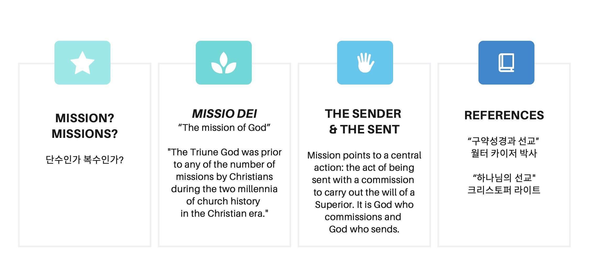
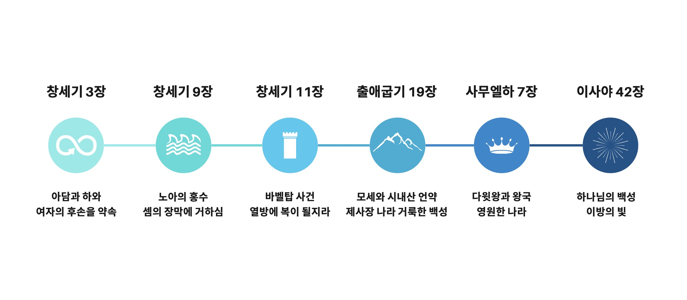

구약의 선교
구약성경은 단순히 이스라엘만을 위한 이야기가 아니라, 모든 민족을 위한 하나님의 선교의 시작이며, 성경 전체는 하나님의 선교라는 구속사의 이야기입니다.
구약성경이 보여주는 선교는 무엇인가?

Mission or Missions ?
| 표현 | 사용 형태 | 의미 |
|---|---|---|
| Mission | The Mission of God (Missio Dei) | 하나님이 세상 속에서 하시는 전체적인 선교적
사역 예: 창조 회복, 구속, 열방을 향한 구원계획 |
| Missions | Human missions, cross-cultural missions | 교회나 개인이 하나님의 선교에 참여하는 사람들의 다양한 선교
활동들 예: 단기 선교, 의료 선교, 장기 선교사 파송 등 |
하나님의 선교
크리스토퍼 라이트 (Christopher J. H. Wright)의 『하나님의 선교』(The Mission of God)는 성경 전체를 통해 선교(Mission) 라는 개념을 중심으로 하나님의 목적과 활동을 신학적으로 정리한 책. 성경은 선교를 '교회가 하는 사역'으로만 한정하지 않고, 선교 자체가 "하나님의 본성적이고 근본적인 활동이며 성경 전체를 관통하는 핵심 주제" 라는 것을 강조
- 선교는 하나님의 것이다. (Mission belongs to God.)
- 하나님이 선교의 주체이며, 교회는 하나님의 선교에 참여하는 존재이다. (The church participates in God’s mission.)
- 성도들은 missions를 통해 “하나님의 선교” (Mission of God)에 참여하는 것
구약성경과 선교
월터 카이저 (Walter C. Kaiser Jr.)의 『구약성경과 선교』(Mission in the Old Testament)는 흔히 신약성경 중심적으로 인식되는 선교 개념이 이미 구약성경 전반에 걸쳐 하나님께서 열방을 향한 선교적인 목적과 관심을 가지고 계셨다는 사실을 강조
- 하나님은 창세기부터 모든 민족과 열방을 향한 계획과 비전을 명확하게 제시
- 이스라엘 민족은 하나님께서 세계 모든 민족에게 복을 전달하기 위해 택하신 제사장 나라
- 구약성경은 단순히 이스라엘만을 위한 이야기가 아니라, 모든 민족을 위한 하나님의 선교 계획
- 따라서 성경 전체는 하나님의 선교라는 관점에서 다시 읽혀져야 한다.

| 본문 | 내용 | 선교적 의미 | |
|---|---|---|---|
| 창세기 3장 | 인간의 타락 | 선교의 필요성 | 창 3:15은 메시아 약속이며 복음의 시작 |
| 창세기 9장 | 노아 언약 | 선교의 확장성 | 열방과 피조물을 위한 하나님의 관심 |
| 창세기 11장 | 바벨탑 사건 | 선교의 방향성 | 온 지면에 흩어짐은 선교의 방향 전환점 |
| 출애굽기 19장 | 제사장 나라로서의 이스라엘 | 선교적 정체성 | 구약에서 가장 명확한 선교 정체성 선언 |
| 사무엘하 7장 | 다윗 언약 | 선교적 통치 계획 | 메시아를 통한 열방 통치 계획 |
| 이사야 42장 | 하나님의 종의 사명 | 하나님의 종: 열방의 빛 | 열방을 향한 종의 선교적 소명 |
창세기 3장 — 선교의 필요성
- 인간의 죄로 인해 하나님과의 관계가 단절되었고, 모든 인류는 회복이 필요
- 이 시점부터 하나님은 인류 전체를 향한 회복의 선교적 계획을 시작
- 여자의 후손(창 3:15)은 장차 사탄의 머리를 상하게 할 자, 곧 메시아적 약속으로 해석되며 이는 복음의 기초이자 선교의 시작
창세기 9장 — 선교의 확장성
- 대홍수 이후 하나님께서 노아와 언약을 맺으심
- 노아 언약은 특정 민족이 아닌 모든 피조물과 인류 전체를 향한 보편적 언약
- 하나님의 은혜와 사랑은 특정 민족에 국한되지 않고 온 인류, 열방을 향함
창세기 11장 — 선교의 방향성
- 인류가 하나님 없이 자신을 높이려 하다가 언어가 혼잡해지고 흩어짐
- 하나님은 인간의 자기중심적 통일을 흩으시고, 열방 가운데 하나님의 이름이 높아지는 분산의 선교
- 바벨 사건은 인간 중심의 반(反)선교적 시도에 대한 하나님의 개입이며, 결과적으로 하나님의 뜻은 열방 속으로 복음이 퍼지는 길을 여는 선교의 전환점
출애굽기 19장 — 선교적 정체성
- 하나님이 시내산에서 이스라엘에게 “제사장 나라, 거룩한 백성”으로 부르심
- 이스라엘은 단지 복을 받는 민족이 아니라, 복을 나누는 선교적 공동체로 부름받음
- 열방을 향한 중재자, 하나님의 계시를 전달하는 제사장 역할을 부여받음, 구약에서 가장 명확한 선교적 정체성을 선언
사무엘하 7장 — 선교적 통치 계획
- 하나님이 다윗과 맺으신 언약 – 그의 왕위가 영원할 것이라는 약속
- 다윗의 후손을 통해 열방을 다스릴 왕, 메시아를 보내실 계획을 알리심
- 다윗 언약은 메시아적 왕국의 토대가 되며, 이는 궁극적으로 열방이 하나님의 공의와 평화를 누리는 선교적 통치를 의미
이사야 42장 — 하나님의 종: 열방의 빛
- “내가 붙드는 나의 종”, 하나님의 종이 열방을 정의로 인도하며 빛이 될 것임
- 하나님의 종(예수 그리스도의 예표)은 이스라엘뿐 아니라 열방의 빛이 되어 구원을 이르게 할 것임
- 이방인 선교, 열방을 향한 하나님의 비전. 하나님은 이스라엘을 통해, 그러나 궁극적으로 그리스도를 통해 열방 구원이 목적